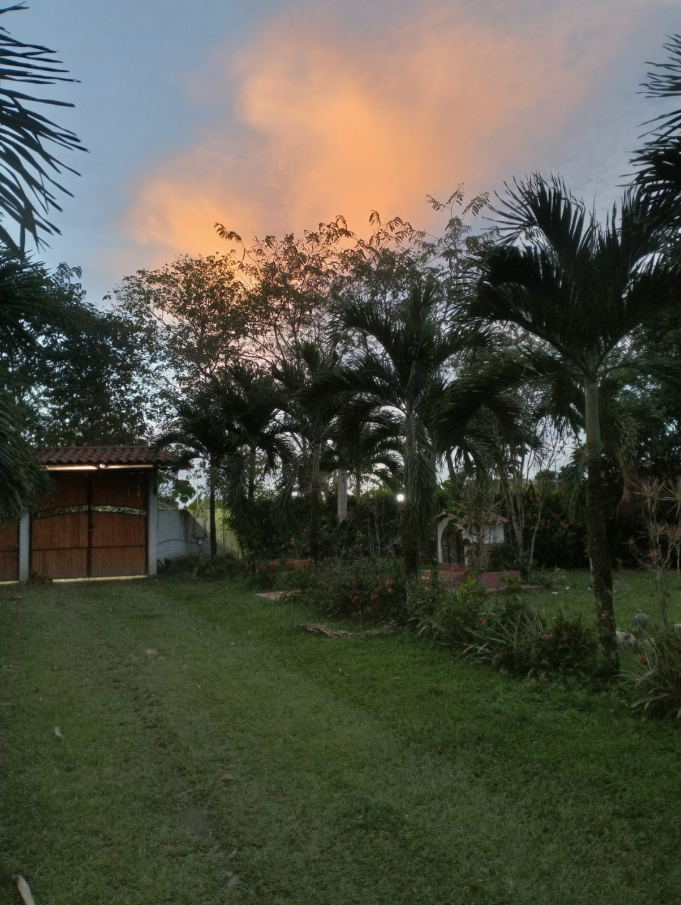
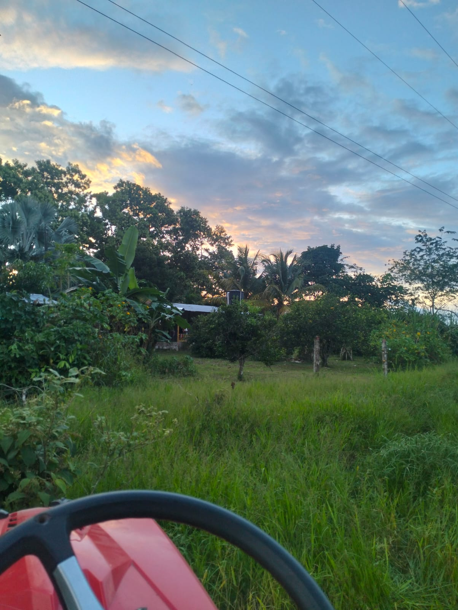

En Finca Santa María criamos y cosechamos carne de cuy, pollo y pescado, además de naranjas, mandarinas, limón de Castilla y miel de abejas.

Foto de la fincaEn la Finca Santa María aprovechamos la tierra fértil y el agua del Ariari para criar cuyes, pollos y peces, cultivar cítricos y producir miel de abejas.
Vendemos directamente al cliente, para que reciba el producto fresco y al mejor precio.
Criados en la finca.
Cosecha fresca y miel de nuestro apiario.
Atención rápida y directa.
Granada, Meta.
Mire el producto y su precio, y haga su pedido directo por WhatsApp.
Los precios son de referencia y pueden variar según la temporada, la oferta y la demanda.
Escríbanos y le cotizamos pedidos por volumen o entregas frecuentes.
Estamos en el municipio de Granada, Meta. Escríbanos y le respondemos.
Empresa agropecuaria
Granada, Meta — Colombia
Región del Ariari